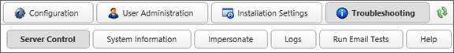
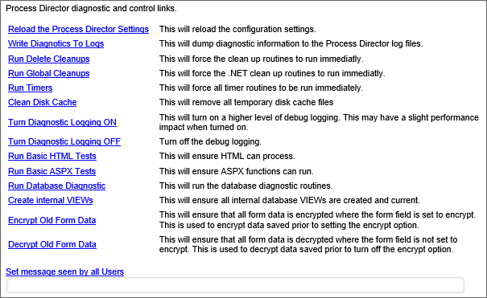

|
|
Lesson Contents | In this Lesson, you will learn the purpose of the Server Control, System Information, and Impersonation sections of the Troubleshooting area. |
The Troubleshooting tab allows contains the various tools needed for troubleshooting Process Director. This provides you with an easier way to troubleshoot issues with the server and processes. The logs can be read here without going to the logs folder, and can be submitted to technical support with a single button click.

The Troubleshooting tab also provides basic information about this Process Director installation, including its name, Interface URL, Server Version, Install Path, License Description, Server IP Address, and Logging Level.

The server control page allows you to run various tests and cleanups to ensure that Process Director is running properly. You can also set a message that will be seen by all users when they log into Process Director. You can choose not to send a message by leaving the text field blank and clicking Set message seen by all Users.
Additional options are available on this tab when in Debug Mode.

The system information page displays information regarding the number of objects and users on this installation of Process Director, characteristics of the hard drive that Process Director is installed on, and licensing information.
For installations that use the Compliance Edition, Process Director allows some users to impersonate other users. Impersonation allows a user to act as another user, seeing and completing the tasks to which he is assigned, leaving his name on routing slips when doing so, etc. Impersonating a user is almost exactly the same as being logged in as that user, except that the impersonation will appear in the audit log. This feature is useful to assist users with problems they are having, or to debug problems you cannot replicate with another user.
To grant a user the ability to impersonate other users, navigate to the User Administration tab of the IT Admin page and click on the user whom you would like to grant the ability. There you will see a checkbox that says User Impersonation Ability?. Check the checkbox.

To impersonate another user, go to the Impersonate tab of the Troubleshooting page. There you will see a Choose the user you want to impersonate user picker. Select the user whom you would like to impersonate this user, and click the Impersonate User button.

When impersonating another user, you will use your own credentials to complete tasks that require reauthentication, so you do not need to know the impersonated user's password to complete tasks.
 It is important to remember that, once a user has been given impersonation ability, they can impersonate any user, including administrative users. This effectively makes them a system administrator while impersonating a user who is a system administrator. It is therefore, very important that you exercise caution is assigning this capability to a user. It is not generally appropriate to allow users to have impersonation capability on a production system.
It is important to remember that, once a user has been given impersonation ability, they can impersonate any user, including administrative users. This effectively makes them a system administrator while impersonating a user who is a system administrator. It is therefore, very important that you exercise caution is assigning this capability to a user. It is not generally appropriate to allow users to have impersonation capability on a production system.